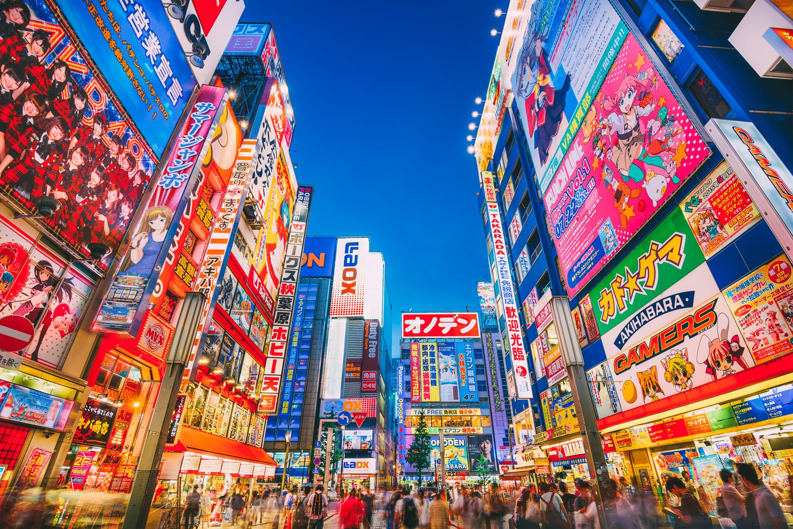
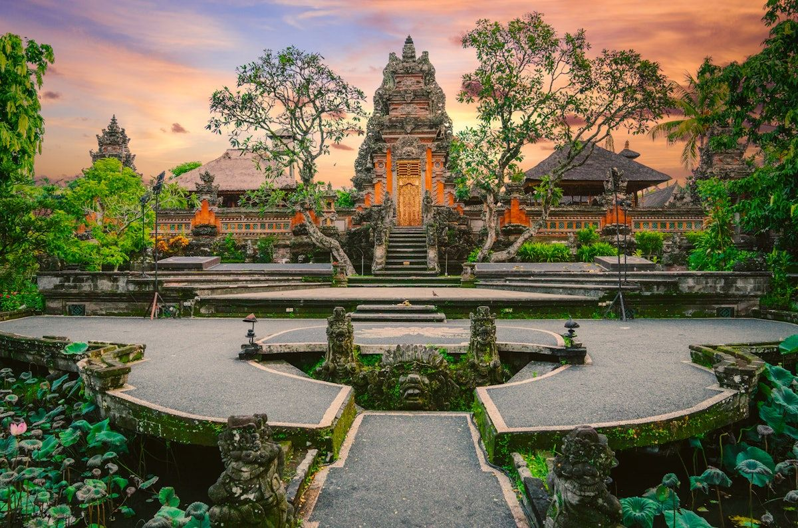
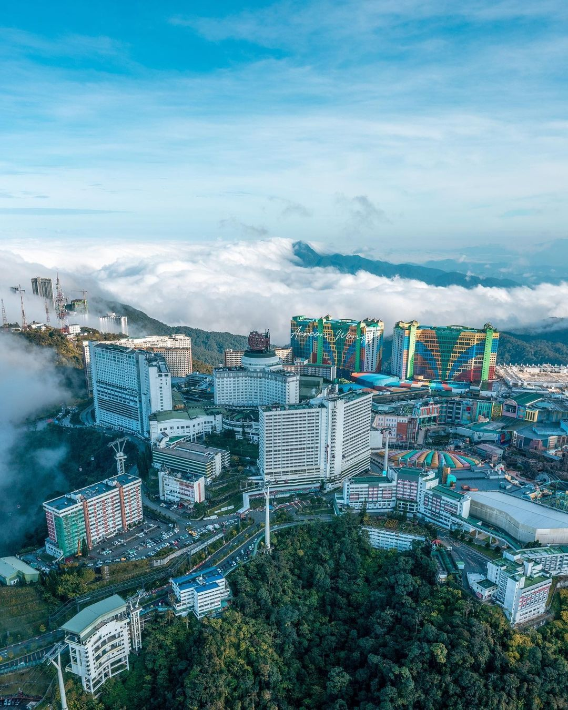
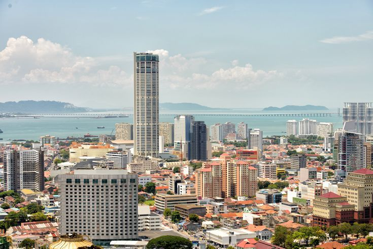
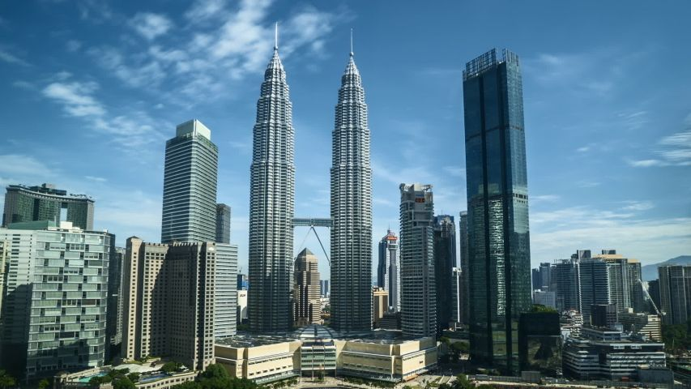

Japan
Tokyo
Tokyo is the second favorite place after kyoto, the view is beautiful and I really like the food. However, it's not really my favorite one because it's too crowded.
Kyoto
For me, Kyoto is the best one. The street food there is pretty good, and the locals are friendly too!
Osaka
Osaka is my least favorite place. For me, the locals are friendly, and i like the food too. However, the hotel experience is not my favorite.

Bali (Indonesia)
Ubud
I love this place. The view is so pretty at the point I thought I was inside the fantasy world. The locals are friendly and kind too. In My Opinion, this is the best place in Bali
Malaysia
Genting Highlands
For me, Genting Highland is really cold. Especially when it's raining. I've used 2 layers of jacket and still feel cold.
Penang
I've visited this for three times and I love this place! Especially the street food. However, no offense but I think the locals there aren't as friendly as the other country i've visited. 
Kuala Lumpur
This place is my least favorite. The food is pretty good, the locals are much more friendly than Penang, but I don't like the hotel experience.
